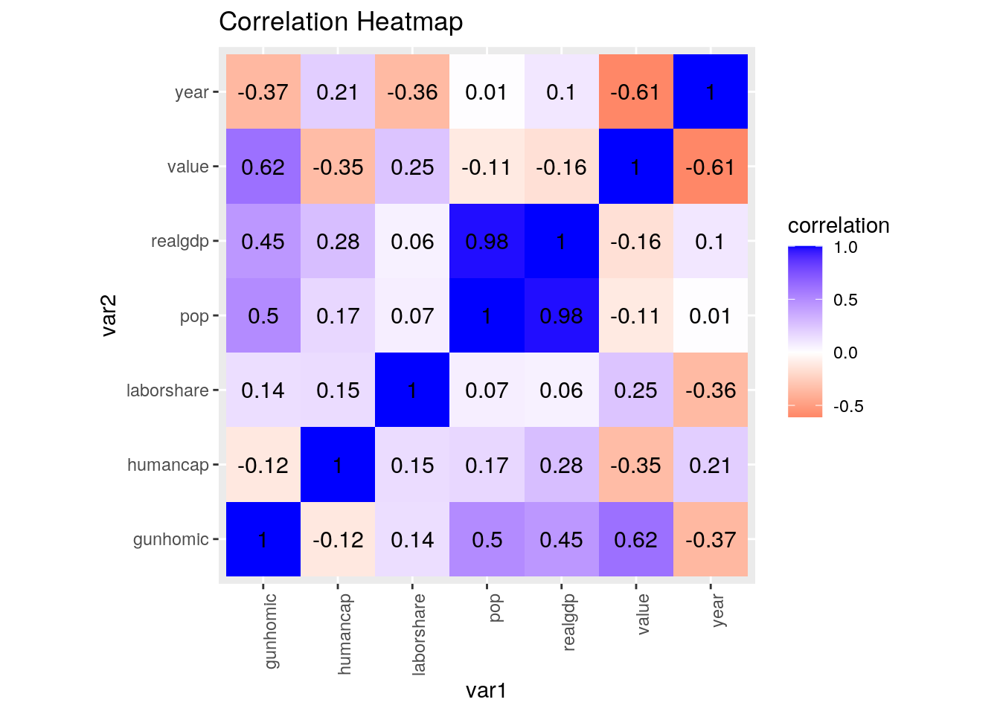
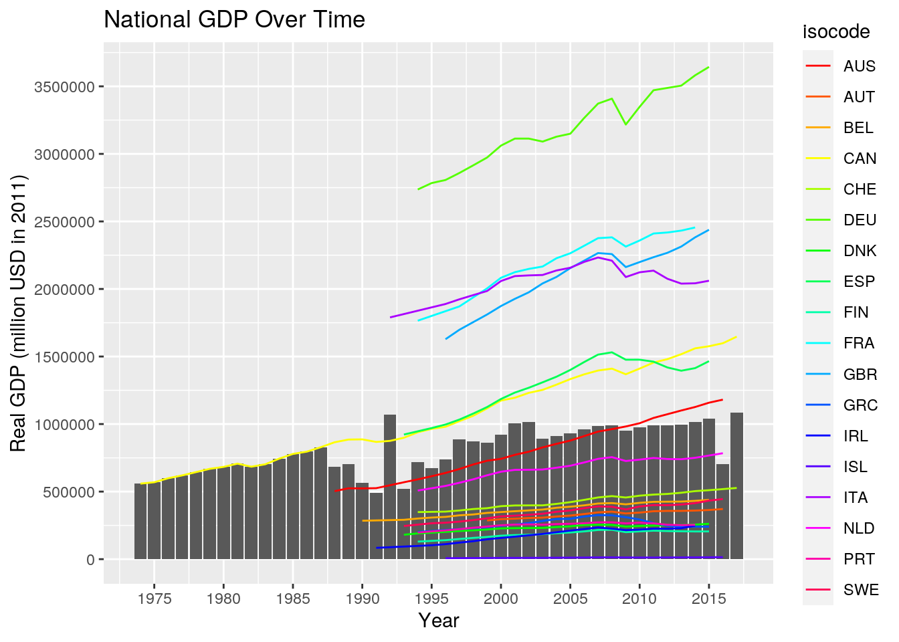
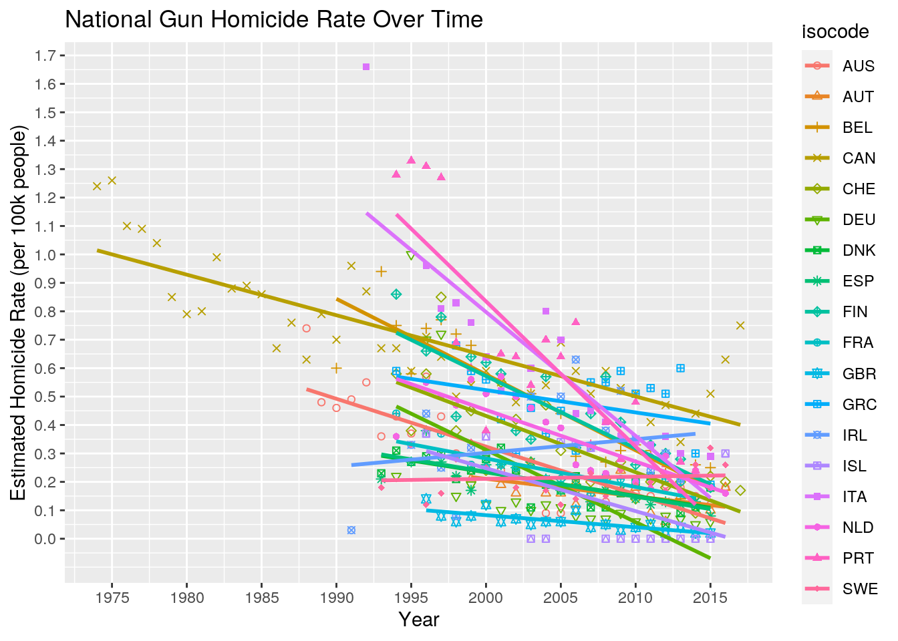
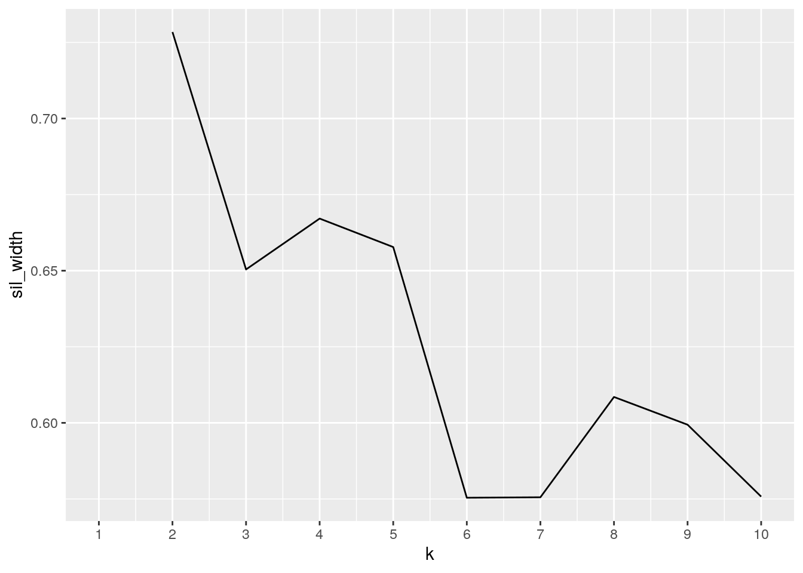

The first dataset that I have chosen to examine for this project is the “pwt_sample” dataset, which has 1,428 observations and 7 variables. The dataset gives macroeconomic data for 21 countries. The variables are country, the country’s ISO code, year, population in millions, human capital index, real GDP at 2011 prices, and a share of labor compensation in GDP. The second dataset that I have chosen to examine is the “ghp100k” dataset, which has 561 observations and 3 variables. This dataset provides estimates of the yearly rate of gun homicides per 100,000 people in the population of certain countries. The variables are country, year, and an estimated rate of gun homicide per 100,000 people.
Both of these datasets were found using “https://vincentarelbundock.github.io/Rdatasets/datasets.html” provided in the project instructions. Personally, after looking for the common variable I wanted to explore (country) by using Ctrl+F, I thought that these two datasets would be interesting to look at for potential correlations. It is possible that I will find an association between GDP and gun homicide rates, but I do not know whether the relationship will be positive or negative.
# install.packages('stevedata')
library(stevedata)
library(tidyverse)
glimpse(pwt_sample) #economic data for countries## Rows: 1,428
## Columns: 7
## $ country <chr> "Australia", "Australia", "Australia", "Australia", "Australi…
## $ isocode <chr> "AUS", "AUS", "AUS", "AUS", "AUS", "AUS", "AUS", "AUS", "AUS"…
## $ year <dbl> 1950, 1951, 1952, 1953, 1954, 1955, 1956, 1957, 1958, 1959, 1…
## $ pop <dbl> 8.386674, 8.633449, 8.816668, 8.985786, 9.194855, 9.411000, 9…
## $ hc <dbl> 2.667302, 2.674344, 2.681403, 2.688482, 2.695580, 2.702696, 2…
## $ rgdpna <dbl> 119510.4, 122550.0, 117533.8, 130284.5, 140700.2, 146249.9, 1…
## $ labsh <dbl> 0.6804925, 0.6804925, 0.6804925, 0.6804925, 0.6804925, 0.6804…glimpse(ghp100k) #gun homicides per 100k people in different countries## Rows: 561
## Columns: 3
## $ country <chr> "Australia", "Australia", "Australia", "Australia", "Australi…
## $ year <dbl> 1988, 1989, 1990, 1991, 1992, 1993, 1994, 1995, 1996, 1997, 1…
## $ value <dbl> 0.74, 0.48, 0.46, 0.49, 0.55, 0.36, 0.43, 0.37, 0.57, 0.43, 0…In this section, I am joining the “pwt_sample” and “ghp100k” datasets into a dataset named “joined”. I chose to use “inner_join” because I would like to look at the gun homicide data in relation to other variables, and doing an inner join allows for all NAs to be eliminated, and only keeps the data with a match in both datasets. Rows were dropped from both datasets: “pwt_sample” started with 1,428 rows and “ghp100k” started with 561 rows. These were narrowed down to 403 rows after the joining.
joined <- inner_join(pwt_sample, ghp100k) %>% glimpse()## Rows: 403
## Columns: 8
## $ country <chr> "Australia", "Australia", "Australia", "Australia", "Australi…
## $ isocode <chr> "AUS", "AUS", "AUS", "AUS", "AUS", "AUS", "AUS", "AUS", "AUS"…
## $ year <dbl> 1988, 1989, 1990, 1991, 1992, 1993, 1994, 1995, 1996, 1997, 1…
## $ pop <dbl> 16.52743, 16.79229, 17.04143, 17.27187, 17.48595, 17.68748, 1…
## $ hc <dbl> 3.370583, 3.390770, 3.411077, 3.423623, 3.436215, 3.448854, 3…
## $ rgdpna <dbl> 503555.0, 524450.1, 523807.9, 525471.7, 547202.6, 569298.2, 5…
## $ labsh <dbl> 0.6090810, 0.6184667, 0.6260087, 0.6173111, 0.6072758, 0.6013…
## $ value <dbl> 0.74, 0.48, 0.46, 0.49, 0.55, 0.36, 0.43, 0.37, 0.57, 0.43, 0…head(joined)## # A tibble: 6 x 8
## country isocode year pop hc rgdpna labsh value
## <chr> <chr> <dbl> <dbl> <dbl> <dbl> <dbl> <dbl>
## 1 Australia AUS 1988 16.5 3.37 503555 0.609 0.74
## 2 Australia AUS 1989 16.8 3.39 524450. 0.618 0.48
## 3 Australia AUS 1990 17.0 3.41 523808. 0.626 0.46
## 4 Australia AUS 1991 17.3 3.42 525472. 0.617 0.49
## 5 Australia AUS 1992 17.5 3.44 547203. 0.607 0.55
## 6 Australia AUS 1993 17.7 3.45 569298. 0.601 0.36For the first line of code, I first selected the columns that were of most interest to me. I then arranged the columns by country. Finally, I filtered the data so I could just look at the information for Canada. In the second line of code, I created a new variable called “gunhomic”, which displays the actual number of people killed by gun violence; this variable was added to my “joined” dataset. For the third line of code, I assessed the average gun homicide rate, average number of actual gun homicides, and average populations for each country along with counting the number of entries per country; I then arranged this data from greatest to least by average rate of gun homicides and rounded all the numeric variables to the hundredth place. In the fourth line of code, I generate summary statistics for the variables rgdpna, hc, labsh, and year.
Some interesting statistics to note are that Canada has the highest average rate of gun homicides out of 100k people (.71), while the United Kingdom has the lowest average rate of gun homicide out of 100k people (.06). Additionally, from the third line of code, I can determine that are 18 different countries in the “joined” dataset. From the summary statistics created in the fourth line of code, I can determine that the range of years for the dataset is from 1974 to 2017.
joined %>% select(country, isocode, year, value, everything()) %>%
arrange(country) %>% filter(isocode == "CAN")## # A tibble: 44 x 8
## country isocode year value pop hc rgdpna labsh
## <chr> <chr> <dbl> <dbl> <dbl> <dbl> <dbl> <dbl>
## 1 Canada CAN 1974 1.24 22.8 2.93 559210. 0.748
## 2 Canada CAN 1975 1.26 23.2 2.96 569404. 0.731
## 3 Canada CAN 1976 1.1 23.5 2.98 599009. 0.732
## 4 Canada CAN 1977 1.09 23.7 3.01 619724 0.725
## 5 Canada CAN 1978 1.04 24.0 3.03 644225. 0.709
## 6 Canada CAN 1979 0.85 24.3 3.06 668738. 0.684
## 7 Canada CAN 1980 0.79 24.5 3.09 683200. 0.671
## 8 Canada CAN 1981 0.8 24.8 3.11 707133. 0.693
## 9 Canada CAN 1982 0.99 25.0 3.13 684491. 0.707
## 10 Canada CAN 1983 0.88 25.3 3.15 702278. 0.677
## # … with 34 more rowsjoined <- joined %>% mutate(gunhomic = value * 10 * pop)joined %>% group_by(isocode) %>% summarize(avgrate = mean(value),
avggunhomic = mean(gunhomic), meanpop = mean(pop), count = n()) %>%
arrange(desc(avgrate)) %>% mutate_if(is.numeric, round, 2)## # A tibble: 18 x 5
## isocode avgrate avggunhomic meanpop count
## <chr> <dbl> <dbl> <dbl> <dbl>
## 1 CAN 0.71 201. 29.5 44
## 2 PRT 0.63 65.4 10.4 21
## 3 ITA 0.59 340. 58.6 21
## 4 BEL 0.48 49.8 10.6 21
## 5 GRC 0.48 53.6 11.2 19
## 6 FIN 0.45 23.4 5.28 21
## 7 NLD 0.35 57.2 16.3 22
## 8 CHE 0.32 23.9 7.58 24
## 9 IRL 0.32 13.7 4.2 18
## 10 AUS 0.290 54.8 19.9 29
## 11 FRA 0.23 146. 63.3 19
## 12 SWE 0.21 19.7 9.17 23
## 13 DNK 0.2 10.8 5.42 23
## 14 DEU 0.2 161. 81.4 22
## 15 ESP 0.2 83.9 43.5 22
## 16 AUT 0.16 13.7 8.35 18
## 17 ISL 0.13 0.37 0.31 16
## 18 GBR 0.06 35.9 61.2 20summarystats <- joined %>% summarize(mean(rgdpna), median(hc),
sd(labsh), min(year), max(year))
summarystats## # A tibble: 1 x 5
## `mean(rgdpna)` `median(hc)` `sd(labsh)` `min(year)` `max(year)`
## <dbl> <dbl> <dbl> <dbl> <dbl>
## 1 907791. 3.19 0.0545 1974 2017To utilize the “pivot_wider” function, I first removed the columns that I was not interested in using the “select” function. I then created columns for each different isocode and used values from the “year” column. I renamed this dataset “widerjoin” and took a slice to observe the results and number of rows/columns.
To utilize the “pivot_longer” function, I selected the columns with the isocodes as names and put those in a new “country code” column. I then used the values from these columns and placed them in a column called “year”. I then omitted NAs from the table. This gave me back the data from before using “pivot_wider” in the first line of code in this section.
widerjoin <- joined %>% select(-hc, -rgdpna, -labsh, -country) %>%
pivot_wider(names_from = "isocode", values_from = "year")
widerjoin %>% slice(1:15)## # A tibble: 15 x 21
## pop value gunhomic AUS AUT BEL CAN CHE DEU DNK ESP FIN
## <dbl> <dbl> <dbl> <dbl> <dbl> <dbl> <dbl> <dbl> <dbl> <dbl> <dbl> <dbl>
## 1 16.5 0.74 122. 1988 NA NA NA NA NA NA NA NA
## 2 16.8 0.48 80.6 1989 NA NA NA NA NA NA NA NA
## 3 17.0 0.46 78.4 1990 NA NA NA NA NA NA NA NA
## 4 17.3 0.49 84.6 1991 NA NA NA NA NA NA NA NA
## 5 17.5 0.55 96.2 1992 NA NA NA NA NA NA NA NA
## 6 17.7 0.36 63.7 1993 NA NA NA NA NA NA NA NA
## 7 17.9 0.43 76.9 1994 NA NA NA NA NA NA NA NA
## 8 18.1 0.37 66.9 1995 NA NA NA NA NA NA NA NA
## 9 18.3 0.570 104. 1996 NA NA NA NA NA NA NA NA
## 10 18.5 0.43 79.4 1997 NA NA NA NA NA NA NA NA
## 11 18.7 0.3 56.0 1998 NA NA NA NA NA NA NA NA
## 12 18.9 0.26 49.0 1999 NA NA NA NA NA NA NA NA
## 13 19.1 0.3 57.2 2000 NA NA NA NA NA NA NA NA
## 14 19.3 0.24 46.2 2001 NA NA NA NA NA NA NA NA
## 15 19.5 0.23 44.8 2002 NA NA NA NA NA NA NA NA
## # … with 9 more variables: FRA <dbl>, GBR <dbl>, GRC <dbl>, IRL <dbl>,
## # ISL <dbl>, ITA <dbl>, NLD <dbl>, PRT <dbl>, SWE <dbl>widerjoin %>% pivot_longer(4:21, names_to = "country code", values_to = "year") %>%
na.omit()## # A tibble: 403 x 5
## pop value gunhomic `country code` year
## <dbl> <dbl> <dbl> <chr> <dbl>
## 1 16.5 0.74 122. AUS 1988
## 2 16.8 0.48 80.6 AUS 1989
## 3 17.0 0.46 78.4 AUS 1990
## 4 17.3 0.49 84.6 AUS 1991
## 5 17.5 0.55 96.2 AUS 1992
## 6 17.7 0.36 63.7 AUS 1993
## 7 17.9 0.43 76.9 AUS 1994
## 8 18.1 0.37 66.9 AUS 1995
## 9 18.3 0.570 104. AUS 1996
## 10 18.5 0.43 79.4 AUS 1997
## # … with 393 more rowscormat <- joined %>% select(humancap = "hc", laborshare = "labsh",
realgdp = "rgdpna", everything()) %>% select_if(is.numeric) %>%
cor(use = "pair") %>% round(2)
cormat## humancap laborshare realgdp year pop value gunhomic
## humancap 1.00 0.15 0.28 0.21 0.17 -0.35 -0.12
## laborshare 0.15 1.00 0.06 -0.36 0.07 0.25 0.14
## realgdp 0.28 0.06 1.00 0.10 0.98 -0.16 0.45
## year 0.21 -0.36 0.10 1.00 0.01 -0.61 -0.37
## pop 0.17 0.07 0.98 0.01 1.00 -0.11 0.50
## value -0.35 0.25 -0.16 -0.61 -0.11 1.00 0.62
## gunhomic -0.12 0.14 0.45 -0.37 0.50 0.62 1.00cormat %>% as.data.frame## humancap laborshare realgdp year pop value gunhomic
## humancap 1.00 0.15 0.28 0.21 0.17 -0.35 -0.12
## laborshare 0.15 1.00 0.06 -0.36 0.07 0.25 0.14
## realgdp 0.28 0.06 1.00 0.10 0.98 -0.16 0.45
## year 0.21 -0.36 0.10 1.00 0.01 -0.61 -0.37
## pop 0.17 0.07 0.98 0.01 1.00 -0.11 0.50
## value -0.35 0.25 -0.16 -0.61 -0.11 1.00 0.62
## gunhomic -0.12 0.14 0.45 -0.37 0.50 0.62 1.00tidycorr <- cormat %>% as.data.frame %>% rownames_to_column("var1") %>%
pivot_longer(-1, names_to = "var2", values_to = "correlation")
tidycorr## # A tibble: 49 x 3
## var1 var2 correlation
## <chr> <chr> <dbl>
## 1 humancap humancap 1
## 2 humancap laborshare 0.15
## 3 humancap realgdp 0.28
## 4 humancap year 0.21
## 5 humancap pop 0.17
## 6 humancap value -0.35
## 7 humancap gunhomic -0.12
## 8 laborshare humancap 0.15
## 9 laborshare laborshare 1
## 10 laborshare realgdp 0.06
## # … with 39 more rowstidycorr %>% ggplot(aes(var1, var2, fill = correlation)) + geom_tile() +
scale_fill_gradient2(low = "red", mid = "white", high = "blue") +
geom_text(aes(label = round(correlation, 2)), color = "black",
size = 4) + theme(axis.text.x = element_text(angle = 90,
hjust = 1)) + coord_fixed() + ggtitle("Correlation Heatmap") From the resulting correlation heatmap from the code chunk below, I can see that population and real GDP are highly positively correlated(.98). I can also see that year and value (estimate of gun homicide rate) are decently negatively correlated (-.61). Interestingly, there is almost no correlation between year and population; I expected that population would increase as the years increased.
library(ggplot2)
joined %>% ggplot(aes(year, rgdpna)) + geom_bar(stat = "summary") +
geom_line(aes(color = isocode)) + scale_color_manual(values = rainbow(18)) +
scale_y_continuous("Real GDP (million USD in 2011)", breaks = seq(0,
4e+06, 5e+05)) + scale_x_continuous("Year", breaks = seq(1970,
2020, 5)) + ggtitle("National GDP Over Time") In this plot, the bars show that the average GDP for all countries tends to increase gradually over time; however, based on the individual lines, differences in individual countries’ trends are more apparent. Based on the individual lines, for almost all the countries the real GDP trends up over time (with some exceptions).
joined %>% ggplot(aes(year, value, color = isocode)) + geom_point(aes(shape = isocode)) +
scale_shape_manual(values = c(1, 2, 3, 4, 5, 6, 7, 8, 9,
10, 11, 12, 13, 14, 15, 16, 17, 18)) + geom_smooth(method = lm,
se = F) + scale_y_continuous("Estimated Homicide Rate (per 100k people)",
breaks = seq(0, 1.7, 0.1)) + scale_x_continuous("Year", breaks = seq(1970,
2020, 5)) + ggtitle("National Gun Homicide Rate Over Time") In this plot, one can see the trends of gun homicide rates over time and per country. The discrete points are plotted using different shapes and colors for each country, while lines of best fit were also created and colored based on country. For most of these countries, gun homicides have decreased over time.
library(cluster)
library(plotly)
pam_dat <- joined %>% select_if(is.numeric)
sil_width <- vector()
for (i in 2:10) {
pam_fit <- pam(pam_dat, k = i)
sil_width[i] <- pam_fit$silinfo$avg.width
}
ggplot() + geom_line(aes(x = 1:10, y = sil_width)) + scale_x_continuous(name = "k",
breaks = 1:10) Based on this graph, it appears that choosing 4 clusters is better than 3 since the silhouette width is higher.
Below is the code used for PAM clustering of the dataset using numeric variables and 4 clusters.
pam <- joined %>% select_if(is.numeric) %>% pam(4)
pam## Medoids:
## ID year pop hc rgdpna labsh value gunhomic
## [1,] 269 2002 11.21680 2.770473 267030.1 0.5391746 0.30 33.65040
## [2,] 89 1994 29.02619 3.374395 939178.6 0.6954579 0.67 194.47546
## [3,] 325 2003 58.14704 2.837316 2103585.2 0.5057539 0.60 348.88223
## [4,] 148 2005 81.67123 3.609564 3149246.8 0.6075891 0.11 89.83836
## Clustering vector:
## [1] 1 1 1 1 1 1 1 2 2 2 2 2 2 2 2 2 2 2 2 2 2 2 2 2 2 2 2 2 2 1 1 1 1 1 1 1 1
## [38] 1 1 1 1 1 1 1 1 1 1 1 1 1 1 1 1 1 1 1 1 1 1 1 1 1 1 1 1 1 1 1 1 1 1 2 2 2
## [75] 2 2 2 2 2 2 2 2 2 2 2 2 2 2 2 2 2 2 2 2 2 2 2 2 2 2
## [ reached getOption("max.print") -- omitted 303 entries ]
## Objective function:
## build swap
## 171122.4 156176.1
##
## Available components:
## [1] "medoids" "id.med" "clustering" "objective" "isolation"
## [6] "clusinfo" "silinfo" "diss" "call" "data"final <- joined %>% mutate(cluster = pam$clustering)
final %>% plot_ly(x = ~rgdpna, y = ~pop, z = ~value, color = ~cluster,
type = "scatter3d", mode = "markers")